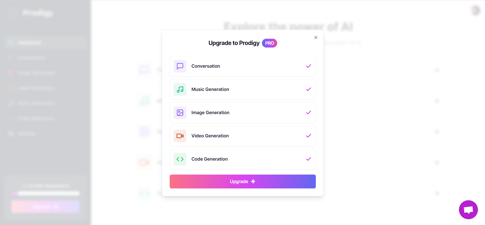

Prodigy AI
This is approximately a five minute read
Introducing Prodigy AI - Your All-in-One Creative Powerhouse!
Prodigy
AI is a cutting-edge Software as a Service (SaaS) web application that
unleashes the limitless potential of artificial intelligence to
revolutionize your project workflow. With an array of powerful
features, Prodigy AI transforms the way you approach content creation.
• Chat Bot: Elevate your designing
experience with our intelligent and interactive chat bot, designed to
spark creativity, offer insightful ideas, and provide prompt answers
to any questions. Seamlessly understanding natural language, it
empowers users with valuable support throughout their creative
journey.
• AI Image
Creation: Unleash your imagination with AI-generated images that will
leave you in awe. Prodigy AI harnesses the power of machine learning
to produce stunning visuals for your designs, marketing campaigns, and
creative projects.
• AI
Video Creation: Elevate your video content with AI-generated creations
that captivate and engage your audience. Effortlessly create
personalized and high-quality videos, whether it's for social media,
presentations, or storytelling.
• AI Audio Creation:
Experience the future of sound with Prodigy AI's AI audio generation.
From custom soundtracks to voiceovers, our platform delivers
exceptional audio tailored to your project's unique needs.
• AI Code Generation:
Simplify your development process with Prodigy AI's intelligent code
generation. It assists in creating efficient and reliable code, saving
you time and effort on routine programming tasks.
Unlock
the full potential of Prodigy AI with our premium paid tier, granting
you unlimited access to all features and unparalleled creative
freedom. Join the AI-powered creative revolution - Try Prodigy AI
today and witness the seamless fusion of technology and imagination!
1 / 7
Landing Page
2 / 7
Sign In Screen
3 / 7

Free Dashboard
4 / 7

Upgrade Message
5 / 7
Stripe Payment
6 / 7

Standard Dashboard
7 / 7

Chat Support
Tech Stack
Web Development Technologies
React
NodeJS
Tailwind CSS
MySQL
Stripe API
TypeScript
Prisma
Shadcn/ui
Project Purpose and Goal
The purpose of the Prodigy AI project was to create an innovative
Software as a Service (SaaS) platform that harnessed the power of
artificial intelligence to meet the growing demand for AI-driven
creative tools. As the sole creator of this project, the primary goal
was to explore and incorporate various AI APIs and cutting-edge web
development technologies to build a professional-looking and
feature-rich full-stack website offering a range of creative
functions.
By combining the latest advancements in AI with web
development expertise, the project aimed to deliver a seamless and
user-friendly experience to customers seeking AI-powered solutions for
their creative endeavors. The project strived to provide users with a
one-stop platform where they could access a diverse set of tools, such
as the chat bot, AI image creation, AI video creation, AI audio
creation, and AI code generation.
Ultimately, the purpose
and goal of the Prodigy AI project were to not only demonstrate
technical proficiency in web development and AI integration but also
to deliver a valuable and transformative service to users, empowering
them to unlock their creative potential and stay ahead in a rapidly
evolving digital landscape.
Web Stack Explanation
The Prodigy AI platform was built using a modern and robust web stack,
incorporating a range of cutting-edge frameworks and APIs to deliver a
seamless and secure user experience.
For the front end, the project leveraged a combination of
Shadcn, React, Next.js, and Tailwind CSS. Shadcn provided a sleek and
polished visual foundation, while React and Next.js ensured smooth
rendering and efficient client-side navigation. Tailwind CSS offered a
utility-first approach to styling, allowing for the creation of a
professional-looking website with functional components and a
responsive design.
To prioritize security and user
identification, the platform integrated Clerk, which enabled a secure
user authentication process. This ensured that user data and
interactions remained protected, establishing trust with the
platform's users.
For seamless customer support, Prodigy
AI implemented Crisp, a user-friendly and clean customer support
system. This allowed users to seek assistance and resolve queries
easily, enhancing their overall experience on the platform.
To manage payment plans for both free and premium tiers,
Stripe was incorporated as the payment gateway. This enabled secure
and efficient processing of payments, providing users with a
hassle-free subscription experience.
On the backend, the
project utilized an array of open-source AI APIs, primarily from
OpenAI and Replicate. These APIs empowered the platform to offer
AI-driven features like chat bot interactions, AI image creation, AI
video creation, AI audio creation, and AI code generation. The
seamless integration of these APIs expanded the platform's
capabilities and delivered powerful creative tools to users.
To ensure efficient data management and storage of user
payment details, Prodigy AI employed Prisma and PlanetScale's SQL
database. Prisma facilitated easy and flexible data manipulation,
while PlanetScale's SQL database ensured robust and scalable storage
solutions.
Problems and Thought Process
During the Prodigy AI project, several challenges arose that required
careful problem-solving and a systematic approach to overcome them.
The initial challenge came during the selection of
frameworks for the front end. While Shadcn, Next.js, React, and
TypeScript were chosen for their modern capabilities and ease of
creating visually appealing websites, integrating them smoothly and
ensuring responsive design posed difficulties. However, through a
combination of studying Shadcn's documentation and seeking guidance
from tutorials, each component was painstakingly pieced together to
achieve the desired outcome.
Another hurdle emerged during
the implementation of user authentication and payment workflows.
Connecting these essential functionalities proved complex, but the
project benefited from the well-documented APIs of Clerk and Stripe.
With perseverance and careful integration, unique user IDs were
successfully stored and mapped to corresponding Stripe customer IDs,
ensuring a secure and efficient payment process. The use of various
APIs, while expanding the platform's capabilities, introduced the
challenge of seamlessly integrating multiple API calls. The thought
process involved careful planning, considering the sequence of API
requests, handling responses, and maintaining a smooth user experience
throughout. Deploying the website brought its own set of challenges,
particularly in setting up webhooks with the Stripe API. Extensive
debugging and multiple test cases were required to ensure that payment
processing and notifications functioned flawlessly, providing users
with a reliable and hassle-free experience.
Throughout the
project, problem-solving involved a combination of reading
documentation, exploring tutorials, seeking support from the developer
community, and conducting thorough testing. With a persistent and
systematic approach, each problem was addressed and resolved,
ultimately leading to the successful creation of Prodigy AI - a
powerful and user-friendly SaaS platform that empowers users to
unleash their creative potential with AI-driven tools.